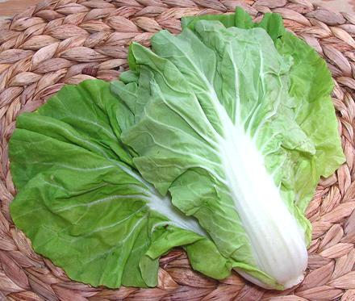

Sweet Bok Choy

[Sweet Pak Choy; Brassica rapa Group Chinensis]
This is a tender bok choy with light green to slightly yellow-green
leaves. The stems, which are white like regular Bok Choy, are relatively
thin, so giving them a head start over the greens is optional. The largest
leaf from the photo specimens was 11 inches long by 7 inches wide.
Cooking time needs to be very short - but, in my opinon, they would
do just fine raw in salads. Of course that wouldn't be authentically
Chinese - the Chinese traditionally don't eat raw vegetables due to
unsanitary growing methods. On the other hand, Sweet Bok Choy isn't a
tradigional Chinese vegetable anyway - and what I can get is grown in
"over regulated" California where traditional Chinese growing methods
are strictly banned.
More on Asian Greens.
Buying:
This green has just started to appear (2-2019).
The photo specimens were purchased from a large Asian market in Los
Angeles (San Gabriel) for 2019 US $0.99 / pound.
Storage:
Store in the refrigerator loosely bagged in
plastic and use as soon as possible - The leaves start to yellow
rather quickly, with a decline in appearance and texture.
Prep:
Separating the stems from the leaves is optional,
as the stems are quite thin and the timing difference won't be a whole '
lot.
Cooking:
These greens are used in soups and stir fries
pretty much the same as regular Bok Choy, but keep the cooking time
shorter. In a stir fry, the taste effect is a bit sweeter than regular
Bok Choy, and it wouldn't hurt to use a little more of it than the
recipe calls for.
cb_bokswz 190305 - www.clovegarden.com
©Andrew Grygus - agryg@clovegarden.com - Photos on this
page not otherwise credited are © cg1 -
Linking to and non-commercial use of this page permitted